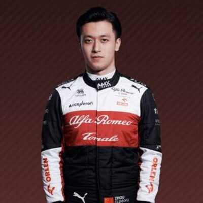

Nombre y apellidos: Guanyu Zhou (en chino los apellidos van antes por tanto sería Zhou Guanyu)
Dorsal: 24
Fecha y lugar de nacimiento: 30 de Mayo de 1999, Shangai, China.
Lugar de residencia : Zurich, Suiza.
Presentación
Guanyu Zhou es un piloto de F1 nacido en China en 1999 que actualmete pilota para la escuderia
Alfa Romeo racing f1. Es el primer piloto chino en la F1, comenzó su carrera en karting
destacándose en varias categorías como Fórmula Renault o FIA fórmula 2 lo que le ha llevado
a ganarse la licencia de F1.

Lista de aficiones
Videojuegos
Deportes
Viajar
Música
Cocina
Trayectoria de equipos
Fórmula Renault 2017 - Konaren GP
Fórmula Renault 2018 - Prema Racing
FIA Fórmula 2 (2020-2021) - UNI-Virtuosi
Formula 1 (2022-actualidad) - Alfa Romeo Racing f1
5 Conceptos básicos de F1
Circuito
Es la pista donde se llevan a cabo las carreras,
puede ser un trazadp permanente o un circuito urbano
Monoplaza
Es el coche con el se pilota en F1, son vehículos altamente avanzados tecnológicamente
Pole Position
Es la mejor posición de la parrilla conseguida por el piloto con mejor tiempo en clasificación
pit Stop
Es la parada que hacen los monoplazas de F1 para cambiar neumáticos,
es importante que se haga rápido para ganar segundos
DRS (Drag reduction System)
Es un sistema que permite reducir la resistencia aerodinámica del monoplaza.
Solo se permite utilizar en ciertas áreas del circuito
Resultados más destacados de Guanyu Zhou (últimos 3 años)
Año 2021 (Fórmula 2)
Victorias - ganó varias carreras como en Italia y en Mónaco
Terminó el campeoanto 2º, destacó en habilidad y rendimiento constante.
Año 2022
Bahrein - En su primera carrera en F1 logró su primer punto - 10º.
Canadá - logró su mejor resultado de 2022 cosechando 2 puntos - 9º.
Año 2023
Australia - Su mejor carrera hasta este momento cosechando 8 puntos - 6º.
Gran Bretaña - Contribuyo a su puntuación en el mundial - 7º.